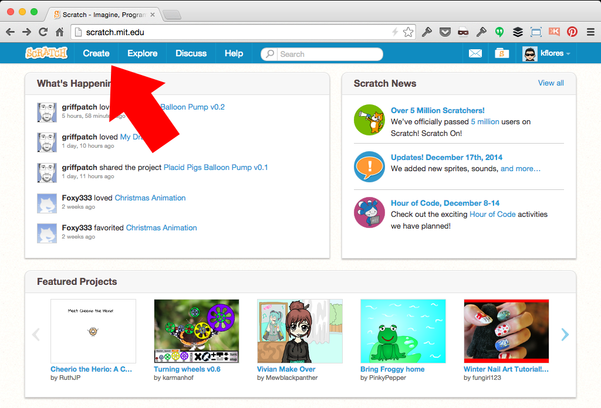

Pen Drawing + Custom Code Block Functions
-
Use Pen functions to draw square and circle shapes
-
Create re-usable code "functions" by using custom Code Blocks
-
Use the custom Code Blocks to make patterns and illustrations
Create new Project
From the Scratch menu, click "Create" to start a new project

Create a Dot costume on the default Sprite
Click new costume paint icon and draw a dot. Delete the 2 cat costumes. (Note: you can hide the dot for drawing, but we'll leave it on to view drawings in progress and start points.)

Draw a Square
Pen functions: "clear" erases all lines, "pen down" to draw, "pen up" to not draw. Draw a square: repeat 4 times -> draw line with distance and direction.
Specify Pen color at any time
Add random Pen color for fun and so we can see multiple squares.
Multiple Squares by duplicating code
Draw 2 squares by duplicating the code and providing a new start position; Notice the connnecting line.
Pen up block in action
By adding a "pen up" block before the second square is drawn, there won't be a connecting line.
Define our "Create Square" code
Our "Create Square" custom code block is ready for scripts.

Move your scripts to draw a square
Move the chain of scripts to make a square under the custom "Create Square" code block.
"Create Square" ready for use
Notice the new "Create Square" script block; you can now use it in your main scripts. This is much more efficient and keeps your common functions tidy.
Create a Pattern
Tweak our "Create Square" custom block and make a pattern in main script chain. (Why is "point in direction" block moved out of the function?)
Add some randomness
Play with the number variables and add random numbers to create unique patterns...
Define a "Create Circle" code block
To create a circle, we need to use math including the infamous "Pi"!
Combine your custom drawing blocks!
Combine Shapes of various sizes / orientations to make advanced patterns... Try to create your own patterns! (Notice the "pen size" blocks used here).
Congratulations!
You've used the drawing Pen and learned about custom Code Blocks! Now, here are a few Challenges:
-
Experiment and create your own patterns or random designs using these code blocks.
-
Remix other drawing projects on Scratch (example: spirograph). Use the Pen tool to create different shapes and illustrations.
-
Apply re-usable custom Code Block techniques in your other projects.
If you got stuck anywhere, see the completed project with comments here: http://scratch.mit.edu/projects/42599958/!
/